DETAIL JE PRE MŇA PODSTATNÝ
IBA VTEDY CELOK DÁVA ZMYSEL
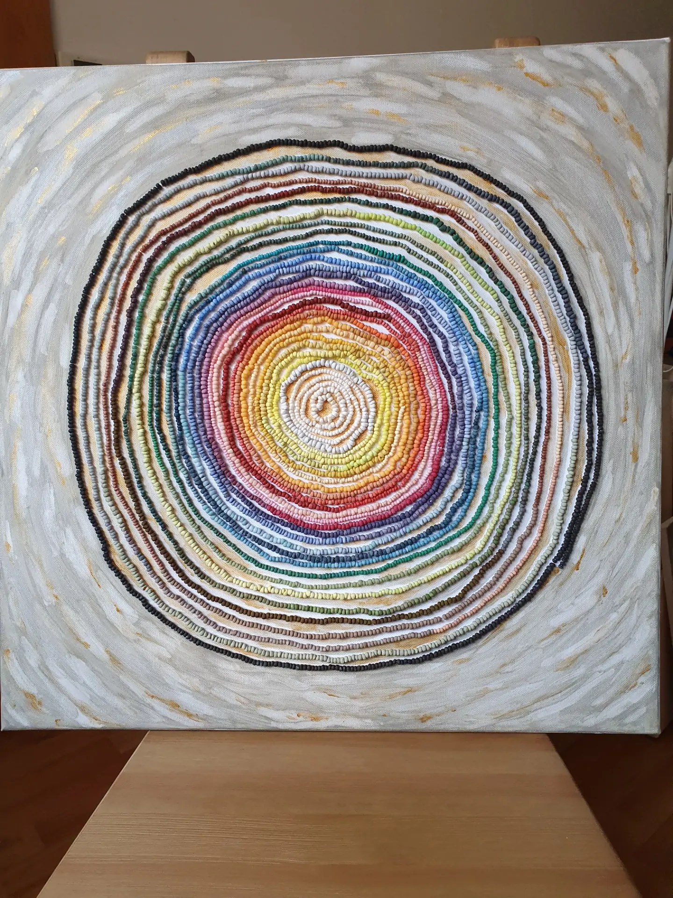Ak celok pozostáva z detailne vypracovaných článkov, jeho vyznenie je intenzívne a pravdivé
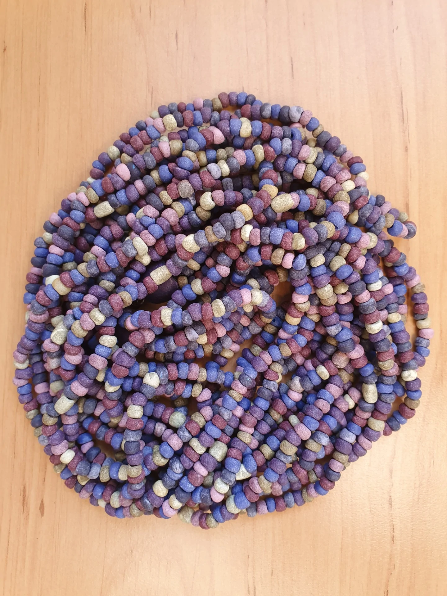 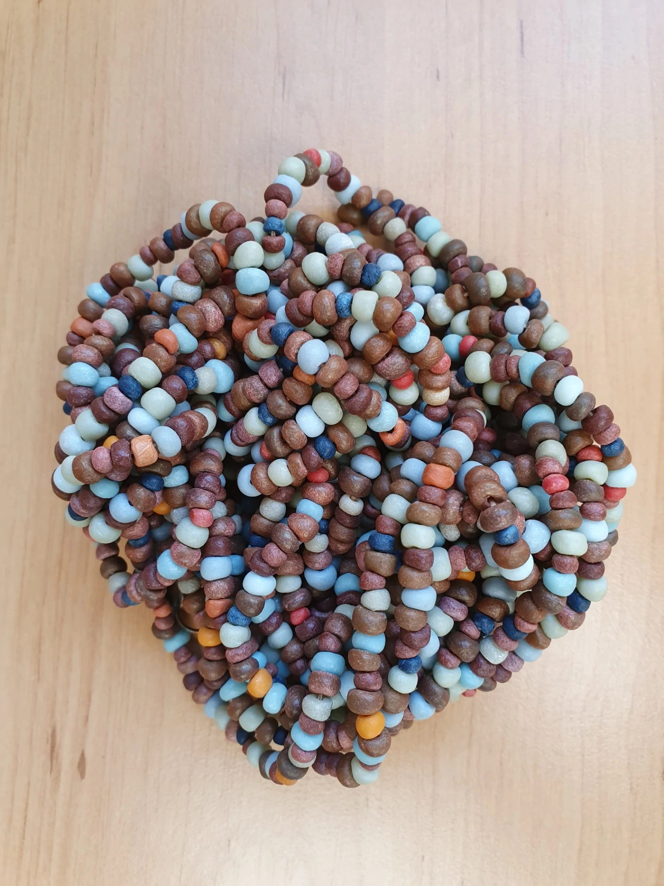Drobné guľôčky modelujem ručne.
Najčastejšie pracujem s Moduritom.
V každej gorálke je odtlačok mojich prstov.
V jednom šperku sa ich nachádza aj niekoľko stoviek.
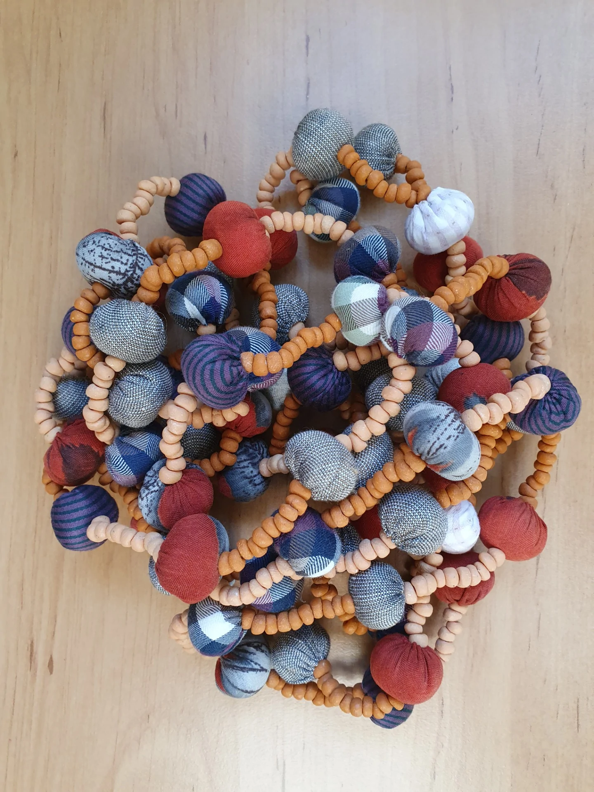 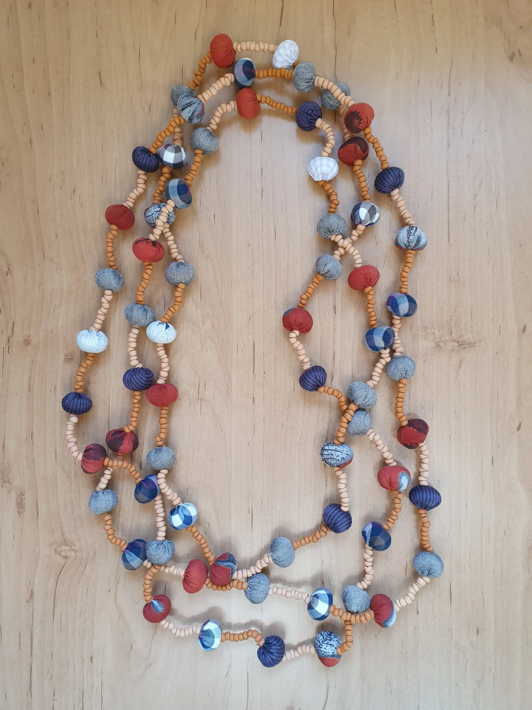Zobrazený náhrdelník pozostáva zo 736 ručne vytvarovaný a ušitých guličiek.
Textilné detaily šijem zo zbytkov látok a využívam ich širokú škálu farieb a vzorov.
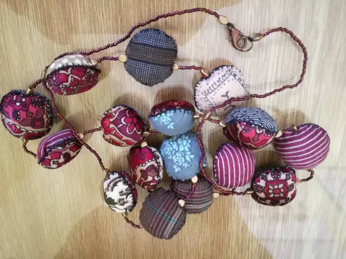 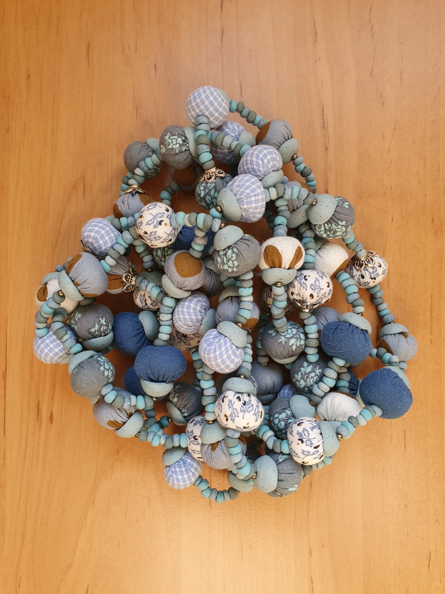Hľadám nové odtiene farieb, kontrasty, kombinácie a rozmanitosť.
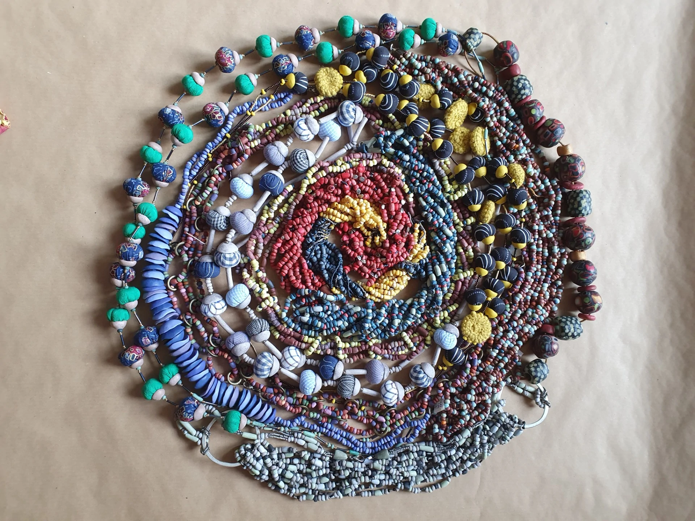 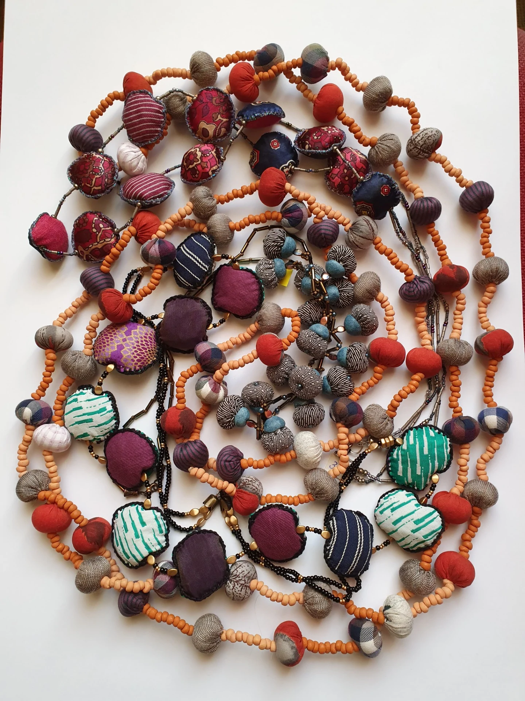Tvorím pre ženy, ktoré vedia, čo im pristane.
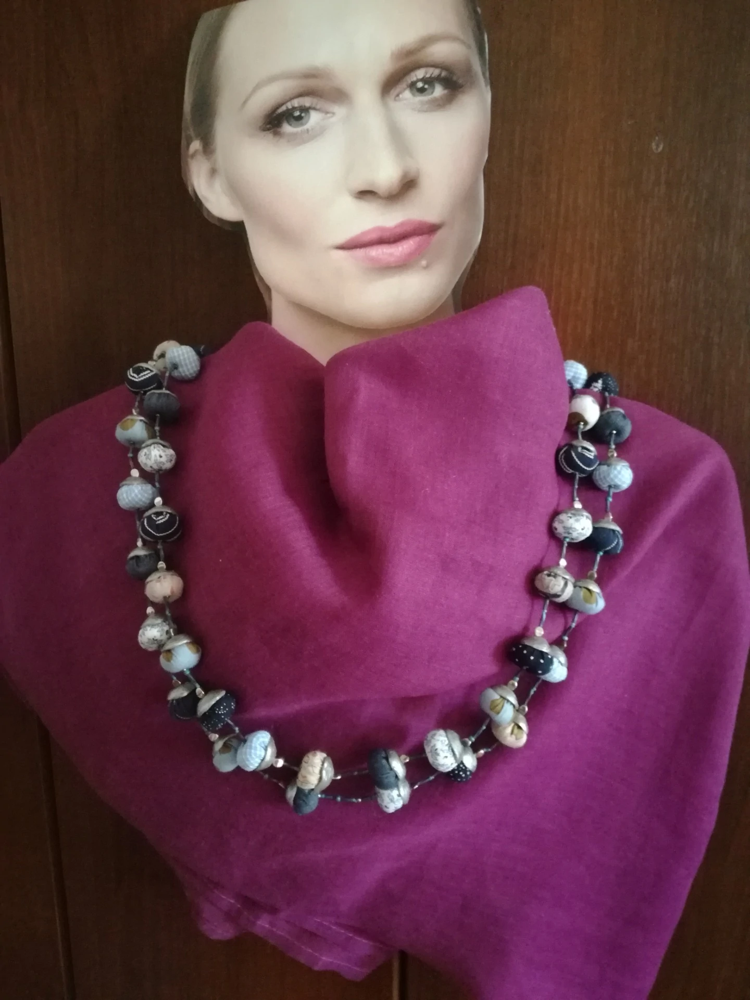 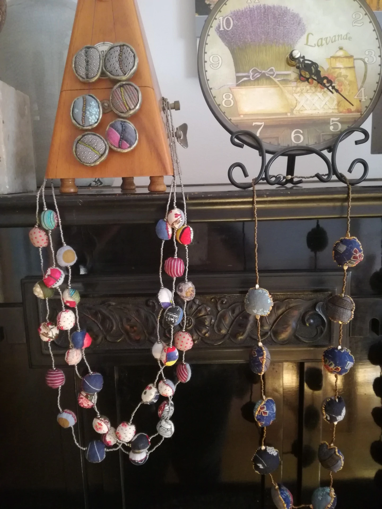Radosť z tvorby je mojou inšpiráciou.
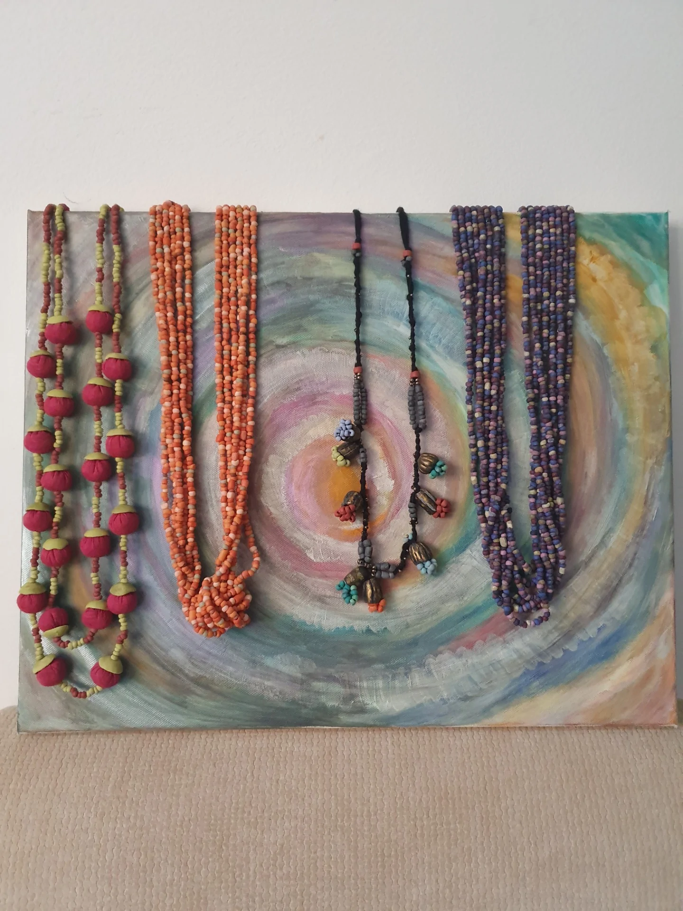40 rokov ma to akosi neprestáva baviť!
A preto som si splnila svoj sen: